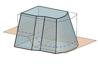
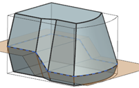

Draft enhancements
What is it?
When you add draft to a part you can now specify Draft from:
-
A non-planar surface

-
Multiple faces

-
A planar face or plane

-
Both sides of a parting surface

-
One side of a parting surface

Where do I find it?
|
Application |
Modeling, Shape Studio |
|
Toolbar |
Feature→Draft |
|
Menu |
Insert→Detail Feature→Draft |